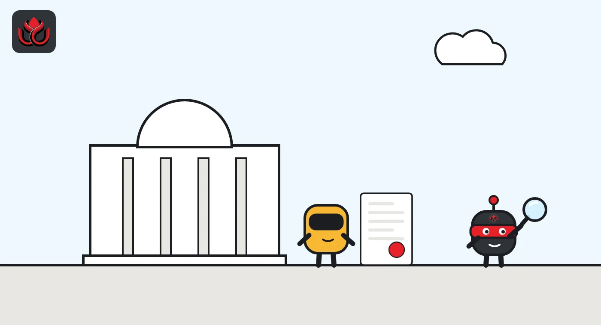
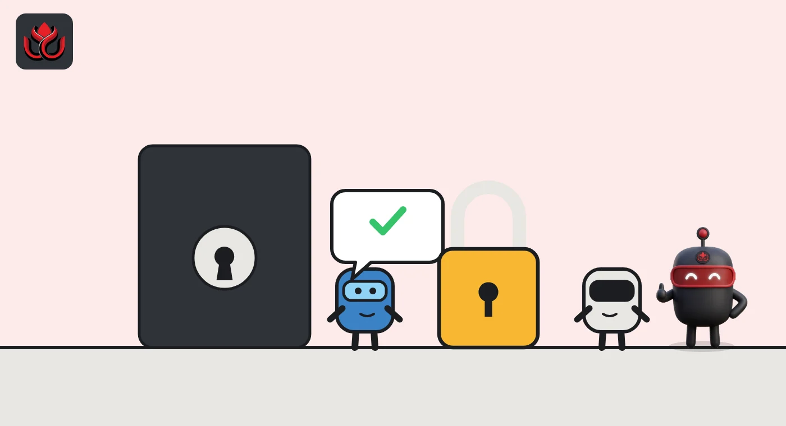

UK crypto firms have until February 28 to apply. The FCA says no license is automatic
Every crypto firm that wants to keep serving UK customers after October 25, 2027, now needs full FCA authorization. The window opened on September 30, 2026, and firms that miss its February 28 close risk losing the right to sign up new customers.
Key points
- The FCA opened full crypto authorization on September 30, 2026. Firms have until February 28, 2027, to apply, and the regime starts on October 25, 2027.
- No existing registration converts automatically. Every firm, including those already registered for money laundering checks, must apply.
- Apply in the window and you can keep trading while the FCA decides. Apply late and you may lose new business. Do not apply and you must wind down.
What the FCA opened
The UK Financial Conduct Authority (FCA) opened applications for full crypto authorization on September 30, 2026, and firms have 151 days, until February 28, 2027, to get in. Any firm that wants to serve UK customers under the new regime, which starts on October 25, 2027, must apply. Old registrations do not carry over.
The change is big. Until now, crypto firms only registered with the FCA, which mainly checked their anti-money laundering controls. The new regime also covers how firms treat customers, how they protect client assets, market abuse and whether they hold enough capital.
According to the FCA's gateway page, applications go through the FCA's Connect system. The new regulated activities come into force on October 25, 2027, as set out on the FCA's policy statements page.
Dominic Cashman, the FCA's director of authorization, said in the FCA's announcement that the regime gives consumers "greater protections and firms a clear framework to operate in."
Who has to apply
The short answer is anyone who wants to carry out the new cryptoasset regulated activities in the UK. The FCA spelled out that this includes:
- firms already registered under the Money Laundering Regulations (MLRs)
- firms registered or authorized under the Payment Services Regulations 2017 or the Electronic Money Regulations 2011
- firms already authorized for other financial activities, which must apply to vary their permissions
The FCA was blunt that there is no automatic conversion from an MLR registration to authorization. In its press release, the FCA added that firms unable to show the necessary standards will not be authorized to operate in the UK market.
The legal base is the Financial Services and Markets Act 2000 (Cryptoassets) Regulations 2026, which the FCA says Parliament passed on February 4, 2026. The FCA's final rules cover stablecoin issuance, cryptoasset trading and custody, admissions and market abuse, and prudential requirements, according to its policy statements page.

Apply early, apply late or wind down
When a firm applies decides what it can do in the meantime. The gateway page sets out three paths:
- Apply inside the window: a saving provision lets the firm keep providing services until its application is finally decided, even past October 25, 2027. The FCA said it expects to decide these applications before the regime starts. The protection also covers any appeal of a refusal to the Upper Tribunal.
- Apply after February 28, 2027, but before the start date: if not authorized by October 25, 2027, the firm falls into a transitional provision. It can only perform existing contracts and cannot enter new contracts with UK customers. The FCA said it will not speed up its assessment of late applications.
- Do not apply: the firm must wind down its UK crypto business before the regime starts, or risk breaching sections 19 or 20 of FSMA, the rules against unauthorized activity.
The FCA is offering free pre-application meetings and has published on-demand webinars, according to its press release. The final rules behind the regime were published on June 30, 2026, in policy statements PS26/9 to PS26/13. They cover admissions and market abuse, stablecoin issuance, regulated activities including custody, prudential rules and the application of the FCA Handbook, as listed on the FCA's policy statements page. On September 16, 2026, the FCA added PS26/18, final guidance on which crypto activities will need authorization.
Rules still being written
The rulebook is not fully closed. On its policy statements page, the FCA flags a draft statutory instrument from April 2026 that proposes excluding activities involving UK-issued qualifying stablecoins from the arranging and dealing activities. The aim is to let those activities fall under a future payments regime instead.
The regulator also plans consultations later in 2026 on resolution, including how assets are distributed if a stablecoin issuer or custodian fails, and on updates to its Financial Crime Guide. It says it will share regulatory reporting materials before the regime starts and run a formal review about two years after commencement.
Pre-application meetings are optional and free, but the FCA's gateway page says requests without meaningful information on the business model, products, customers and planned activities will be rejected. Meetings are not advice and do not guarantee approval.

The calendar in days
The calendar is long but tight at the front. The application window lasts 151 days. After it closes there are another 239 days before the regime bites, a period the FCA intends to use for decisions. In total, the gateway opened 390 days before the start date.
The UK crypto authorization calendar
days
LC Insight calculation from dates published by the FCA and FCA policy statements page.
Timeline
Parliament passes the FSMA (Cryptoassets) Regulations 2026
FCA publishes final rules in PS26/9 to PS26/13
FCA publishes PS26/18 on cryptoasset perimeter guidance
Authorization gateway opens
Application window closes for firms relying on the saving provision
New UK cryptoasset regime takes effect
LC Insight analysis
This section is our reading of the facts above, not a statement of fact.
- We think February 28, 2027, is the real deadline, not October 2027. Miss it, and if no decision arrives in time, you cannot take on new UK customers. For an exchange, that is a commercial cliff.
- Expect a rush of applications in early 2027 and fewer firms in the UK afterward. Firms that only ever passed a money laundering check now face capital and conduct rules too, and some will not make it.
- The UK now works like the EU's MiCA in one key way: one national license that has to be earned. We expect international exchanges to run their UK and EU license work as a single project.
What's next
- Any FCA data on how many firms apply before February 28, 2027
- Further FCA consultations on resolution rules and financial crime guidance due later in 2026
- Public statements from large exchanges on whether they will apply or exit the UK
Disclaimer. This article is based on public information and the sources listed below as of the update time shown. It is for information only and is not investment, legal or tax advice. Figures may change as companies and authorities publish new data.